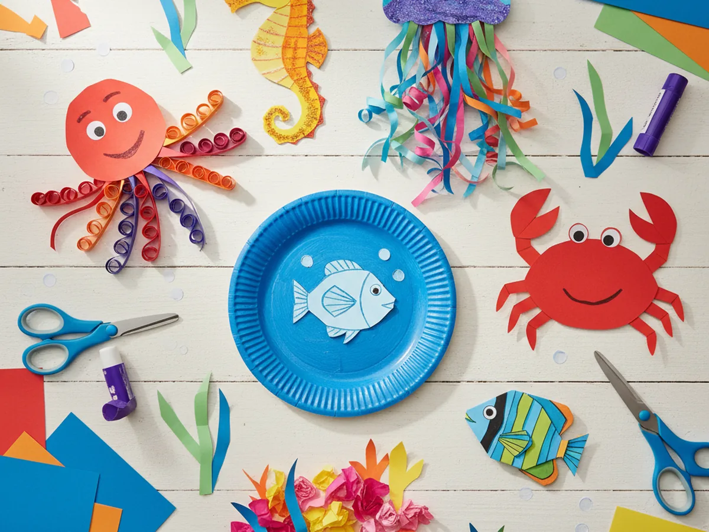
There is something magical about the ocean for little kids. The colors, the funny shapes, the wiggly tentacles, the friendly fish faces. Best of all, you can bring all of it to life on the kitchen table with just a few sheets of paper and some glue. 🐠
This list rounds up 20 of our favorite paper aquarium craft ideas for kids of every age. Each one is simple, mostly mess-free, and full of cozy moments to share together. Whether your child loves bright tropical fish, gentle sea turtles, or wiggly jellyfish, you will find something here that sparks their imagination.
What You'll Need
Most of these paper aquarium craft ideas use the same handful of supplies, so one quick gather at the start covers nearly the whole list. 🌊
- Crayola Construction Paper, a big assorted pack gives you every ocean color you could want.
- White Paper Plates, 9 inch uncoated plates are perfect for fish, turtles, and aquarium windows.
- Colored Tissue Paper, soft and fluffy, great for jellyfish, seaweed, and underwater scenes.
- Self Adhesive Googly Eyes, in assorted sizes, the secret ingredient that brings every sea creature to life.
- Elmer's Washable Glue Sticks, easy for little hands, wash off skin and clothes in a snap.
- Blunt Tip Kids Scissors, comfortable safety scissors sized for small fingers.
- Chenille Pipe Cleaners, perfect for octopus tentacles, jellyfish hangers, and bendy details.
- Crayola Washable Watercolors, ideal for painting plates, fish scales, and ocean backgrounds.
20 Paper Aquarium Craft Ideas to Make Together
1. Paper Plate Aquarium Window
Cut the center out of a white paper plate, leaving the rim intact like a porthole frame, then stretch a piece of blue tissue or cellophane across the back of the rim to look like water. Glue small construction paper fish, bubbles, and green seaweed strips onto the blue background. Hang it in the kitchen window so the light shines through. This is one of the most rewarding paper aquarium craft ideas because the finished piece looks like a real little fish tank you can display.
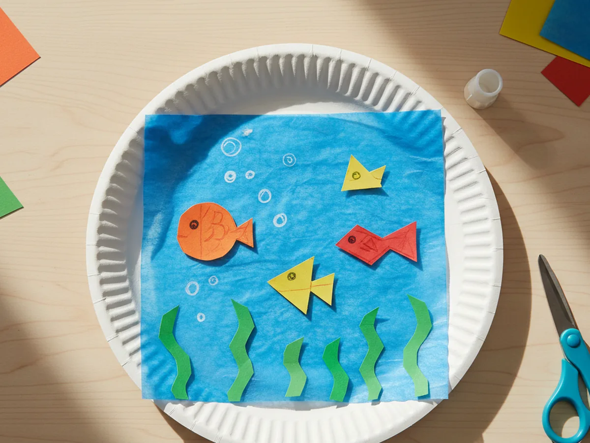
2. Paper Bag Fish Puppet
Lay a small paper lunch bag flat with the bottom fold facing up, then decorate the fold like a fish mouth and cover the body with overlapping paper scales in pink, orange, and yellow. Add a big googly eye, two side fins, and a tail at the open end. Slip your child's hand inside and the fish opens and closes its mouth as they talk. This idea always ends in giggles because the puppet feels alive from the very first second.
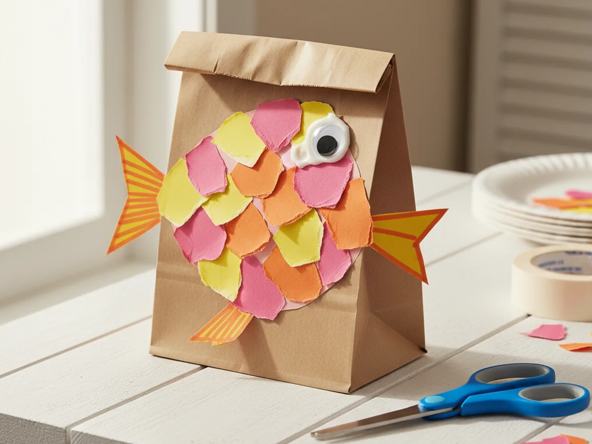
3. Tissue Paper Jellyfish
Crumple a sheet of pink or purple tissue into a soft round dome and gather long curly streamers of tissue underneath as the tentacles. A small piece of tape inside holds the gather closed, and two tiny googly eyes go on the dome. Hang it from a thread or lay it on a blue paper background to make the tentacles spread out. Of all the paper aquarium craft ideas here, this is the one little hands love crinkling and fluffing the most.
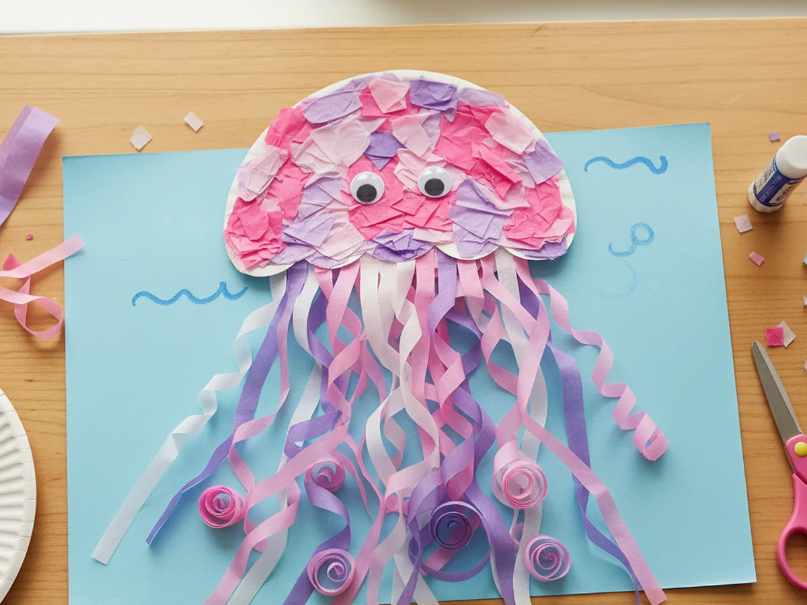
4. Cardboard Box Aquarium Diorama
Stand an old shoebox on its long side and line the inside walls with blue construction paper for the water, then tape a thin layer of sandy beige paper at the bottom. Hang small paper fish from short strings glued to the top of the box so they bob gently when air moves. Add paper coral, seaweed, and tiny shell shapes around the inside. This is one of those paper aquarium craft ideas that turns a rainy afternoon into a real little world your child will keep playing with for days.
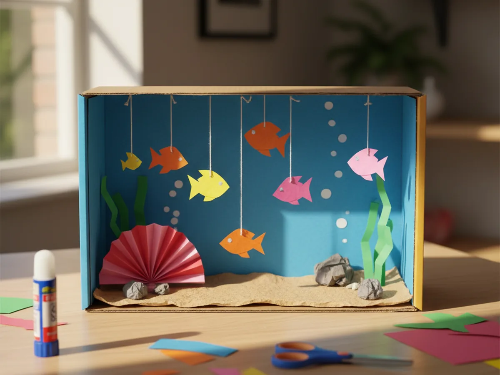
5. Paper Strip Octopus
Cut a round purple head from construction paper and add two big googly eyes near the top. Then cut eight long thin strips of purple paper and curl each one around a pencil so it springs into a spiral. Glue the curled strips along the bottom of the head as tentacles. The wobbly springy legs are what make this little octopus so charming. It is a classic among paper aquarium craft ideas because the curling part feels almost like magic for younger kids.
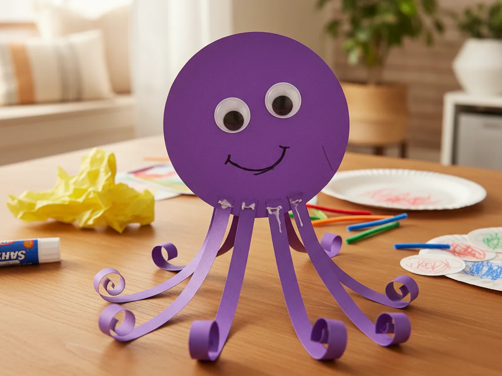
6. Construction Paper Seahorse
Draw a simple seahorse shape on a piece of yellow or orange construction paper and cut it out, then add a small fin on the back and a googly eye on the head. Decorate the body with marker dots or tiny round stickers for that magical seahorse texture. Glue it onto a blue paper background as if it is gliding through the water. Seahorses are quirky little creatures, and kids love giving each one a name and a personality.
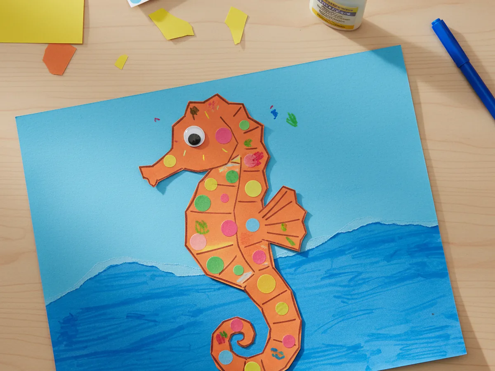
7. Paper Coral Reef Collage
Start with a blue construction paper background and let your child tear or cut small shapes of pink, orange, and yellow paper to glue on as coral branches. Add green tissue paper strips for swaying seaweed and a few cut paper fish swimming overhead. The torn-paper texture gives the whole scene a soft, dreamy feel. This is one of the most relaxed paper aquarium craft ideas because there is no right or wrong, just colorful layers added wherever they look pretty.
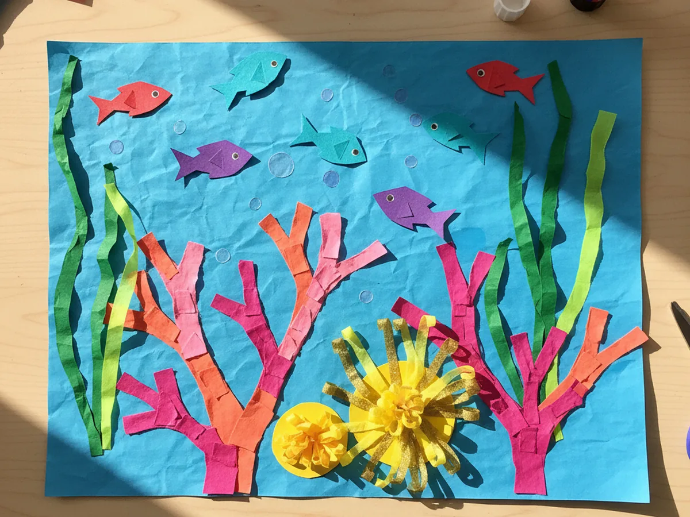
8. Paper Plate Crab
Paint half of a paper plate bright red and let it dry, then turn the curved side up so it looks like a crab shell. Add two googly eyes on top, two big red paper claws at the front, and four small red paper legs on each side. The flat plate makes it easy for the crab to stand or hang on a wall. Younger toddlers can press on the googly eyes while older kids handle the cutting, so the craft works for siblings of different ages.
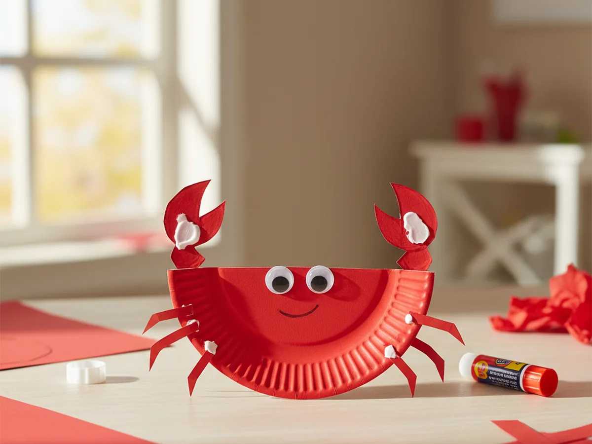
9. Origami Tropical Fish
Use a square sheet of bright origami paper and fold the classic origami fish: bring the corners to the center, then fold the back end into a tail fin. Add a small marker dot for the eye and you have a colorful tropical fish in under five minutes. Make a few in different colors and arrange them on the wall in a swimming pattern. Older kids especially enjoy these because the folds feel like a puzzle and the finished fish look surprisingly polished.
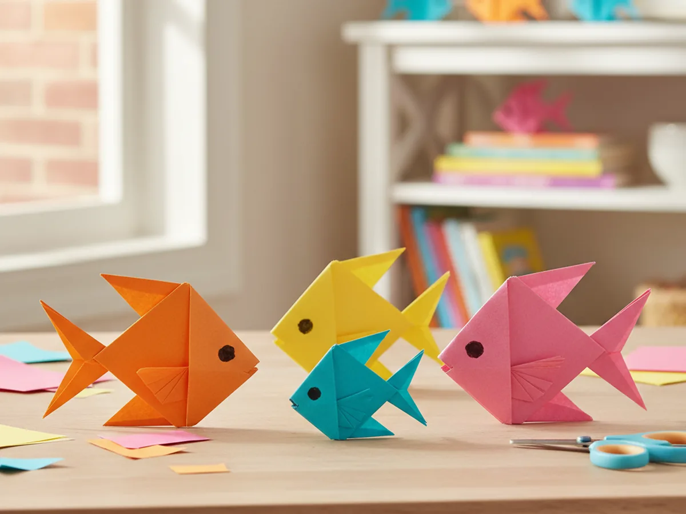
10. Paper Roll Shark
Wrap an empty toilet paper tube in grey construction paper and add a tall triangle fin on top, a small tail fin at one end, and a row of white paper triangle teeth at the other end. Two googly eyes near the mouth finish the look. Stand it upright on the craft shelf or set it swimming across a blue paper sea. The recycled tube does most of the structural work, which makes this one of the easiest paper aquarium craft ideas for busy days.
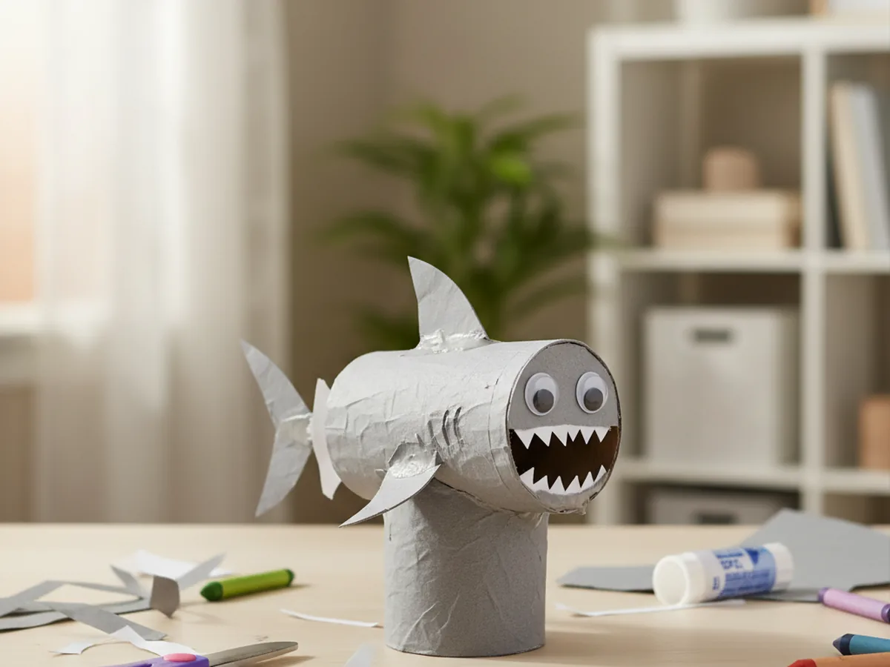
11. Handprint Starfish
Trace your child's hand with fingers spread on orange construction paper and cut out the shape, then add small dot stickers or marker spots to give it that bumpy starfish look. Glue it onto a sandy beige paper background. Years later, that little handprint will be the best part of looking at the craft again. This idea makes a sweet keepsake without needing any fancy supplies. 🌟
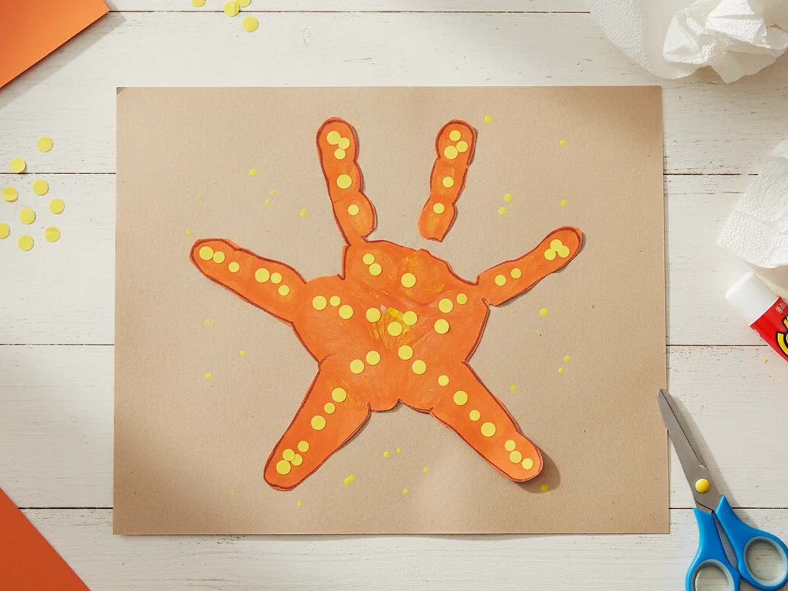
12. Paper Chain Seaweed
Cut strips of green and dark green construction paper and loop them together into a long paper chain that drapes like a swaying piece of seaweed. Mix the shades so it looks like a real underwater plant catching the current. Hang several lengths from a doorway or string them across a window for an instant aquarium wall. Paper chains are one of the most kid-friendly paper aquarium craft ideas because little kids can keep adding loops as long as their attention lasts.
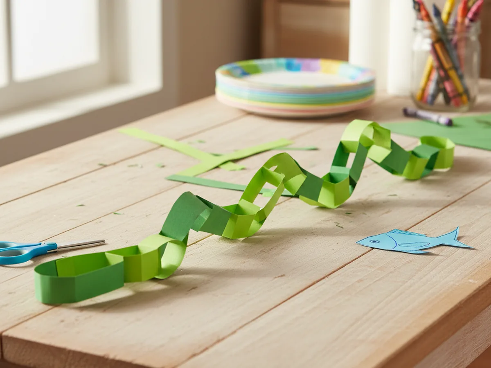
13. Paper Plate Sea Turtle
Paint a paper plate green and let it dry, then glue darker green hexagon shapes around the curved bottom for the turtle shell pattern. Add four small green flippers under the rim, a small head poking out at the front with two googly eyes, and a tiny tail at the back. Sea turtles are gentle and calm, and this craft has the same easy feel. It pairs beautifully with a story about ocean animals at bedtime.
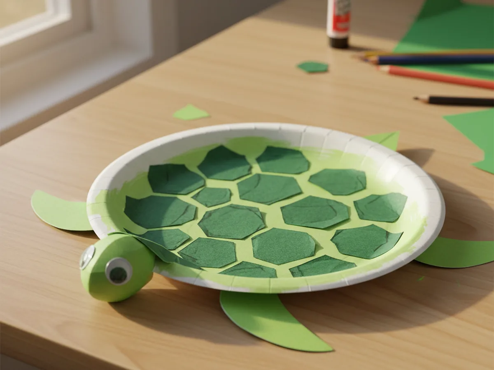
14. Paper Mosaic Goldfish Bowl
Draw a simple fishbowl outline on white cardstock and let your child fill it in with small torn squares of light blue paper for the water. Add an orange paper goldfish silhouette, a few tiny white paper bubbles, and a green plant at the bottom. The mosaic style is forgiving and looks better the messier it gets, which takes all the pressure off little crafters. It is one of those calm afternoon paper aquarium craft ideas that feels almost meditative.
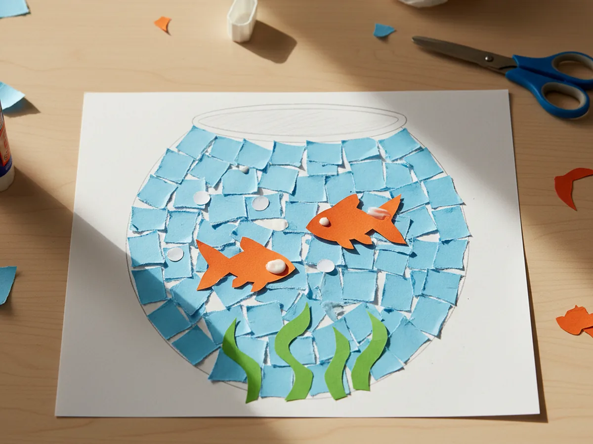
15. Paper Aquarium Mobile
Find a small twig or a thin wooden dowel and tie several lengths of string to it at different heights. Attach a cut paper fish, an octopus, a jellyfish, or a starfish to the end of each string so they dangle at different levels like an underwater scene. Hang the finished mobile in your child's bedroom window where the air can give it a slow gentle sway. Watching it move is the kind of quiet joy that brightens an entire room.
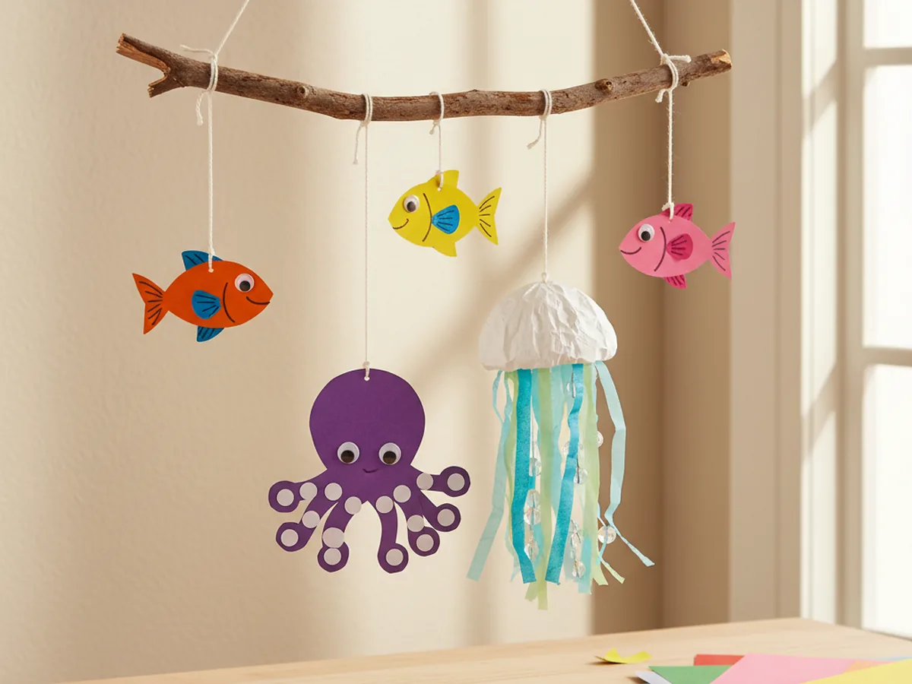
16. Folded Paper Stingray
Cut a wide diamond from grey or pale blue paper and fold it gently down the middle so the sides curve up slightly like wings. Glue on two small googly eyes near the front edge and add a long thin paper strip trailing behind as the tail. Place it on a blue background and it looks like the stingray is gliding along the ocean floor. This is a sweet idea for kids who already know fish and want to learn about a new sea creature.
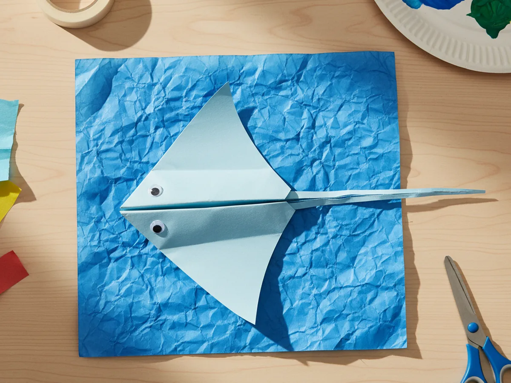
17. Paper Cup Underwater Diver
Turn a small paper cup upside down to make a diving helmet and cut a round window on the front so you can see a smiling paper face inside the cup. Glue a blue paper body shape under the cup as the diving suit, and add a curving line of small white paper bubble circles rising from the helmet. This is a fun way to bring a little human visitor into the ocean scene, and kids love giving the diver a name and a backstory. 🤿
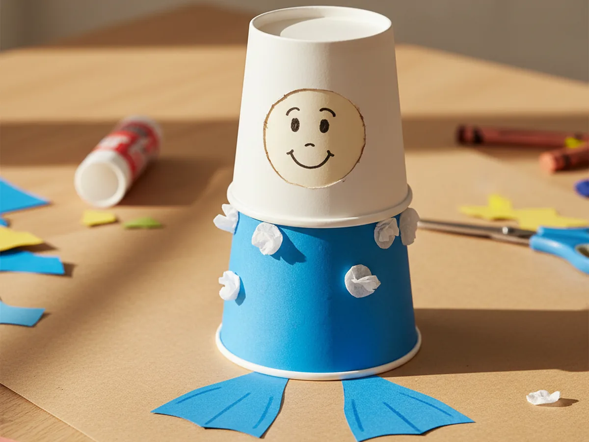
18. Paper Bubble Fish Scene
Start with a sheet of blue construction paper and glue a few colorful paper fish swimming across it in different directions. Then add a winding stream of small white paper circles as a trail of bubbles rising upward from one of the fish. Finish with green paper seaweed at the bottom for a complete underwater scene. This is one of the most beginner-friendly paper aquarium craft ideas on the list and works beautifully with younger preschoolers.
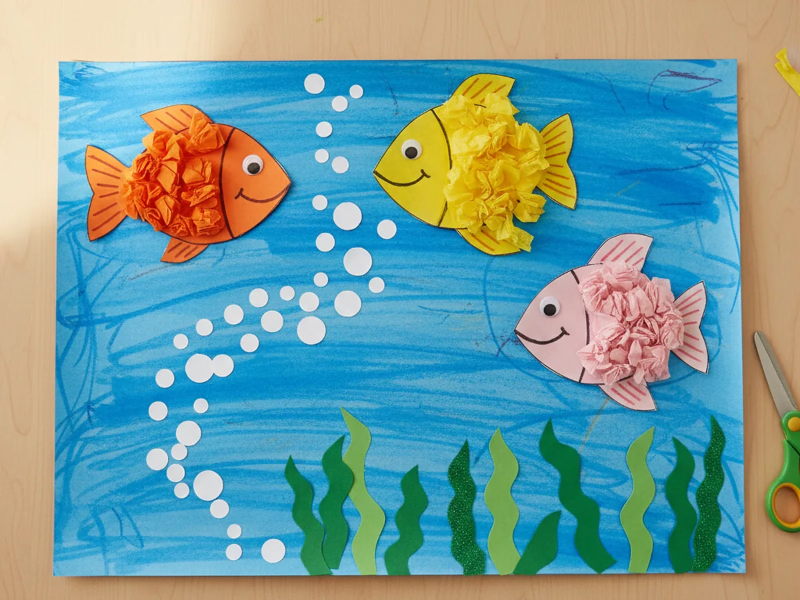
19. Paper Plate Whale
Paint a paper plate light blue and cut a wedge from one side to form the open mouth of a whale, then add a small triangle fin on top, a curled paper water spout above the head, and a friendly googly eye on the side. Finish with a tail fin at the back. Whales are gentle giants and kids tend to feel a sweet kind of fondness for them. This craft is a lovely first introduction to one of the most loved animals in the ocean.
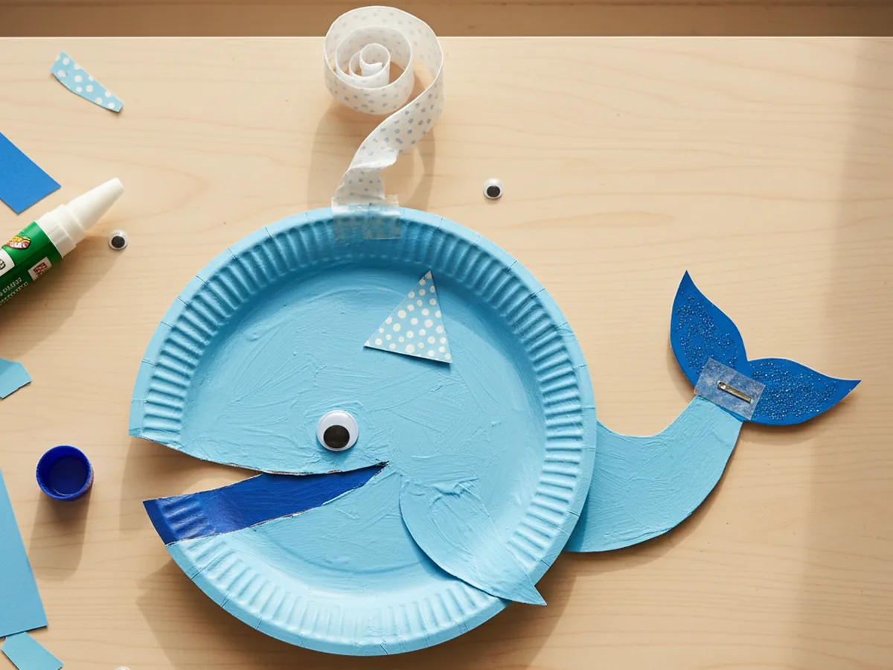
20. Paper Treasure Chest
Cut a small brown paper chest shape with a curved lid and glue the lid open at the top so it looks lifted. Inside, glue yellow paper coin circles, a few paper gems in red, blue, and green, and a string of small white paper pearls spilling out. Set the chest on a sandy beige paper background and you have a finishing touch that completes any underwater scene. This is the perfect way to end a session of paper aquarium craft ideas because every aquarium needs a little buried treasure. ✨
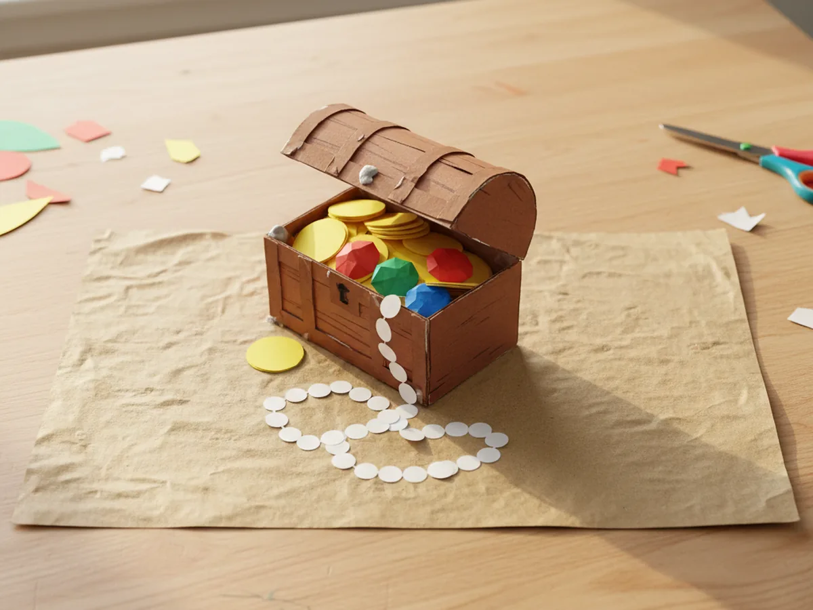
Final Thoughts
What makes ocean crafts so special is the way they invite a child's imagination to travel somewhere new. A flat sheet of paper becomes a jellyfish, a paper plate becomes a sea turtle, and suddenly the kitchen table is a small slice of the ocean floor. These paper aquarium craft ideas are designed to be doable on any day, with the simple supplies you already have, and to leave you with a finished piece that feels worth the time you spent together.
Pick the one that calls to you today and let your child dive in. There is no wrong way to make a paper fish.
More Crafts You'll Love
If your child is loving the ocean theme, these two articles have more underwater fun to explore together.
Happy crafting with your little one!